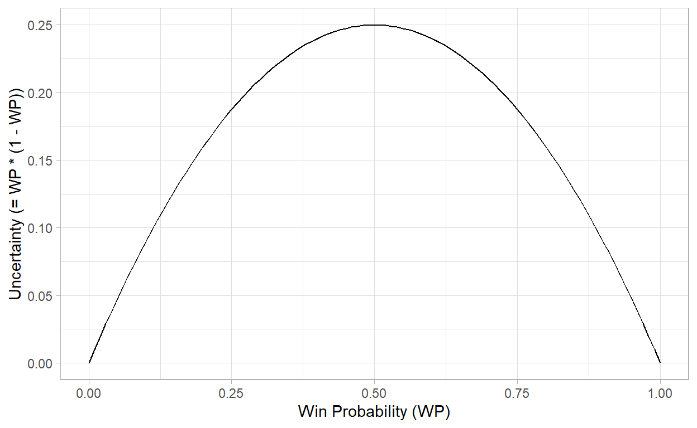
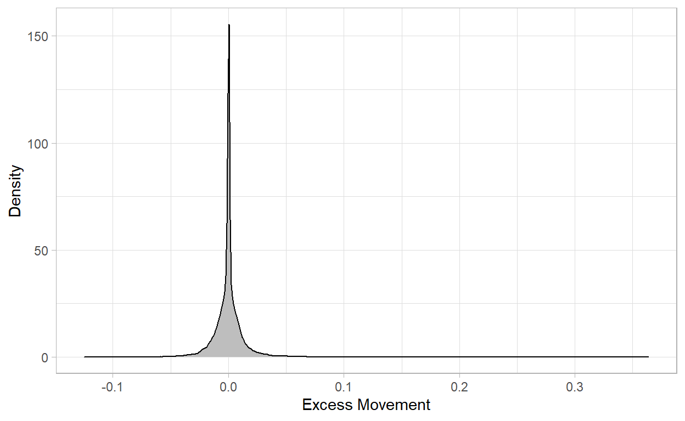
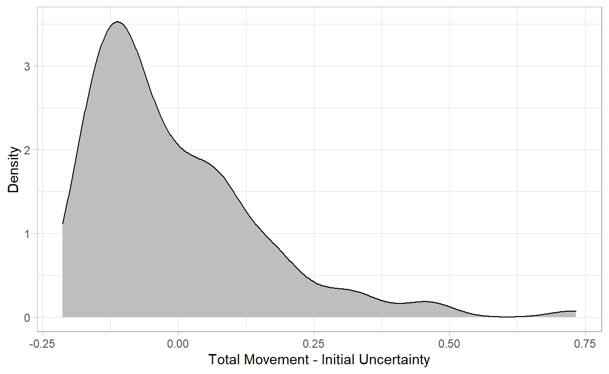
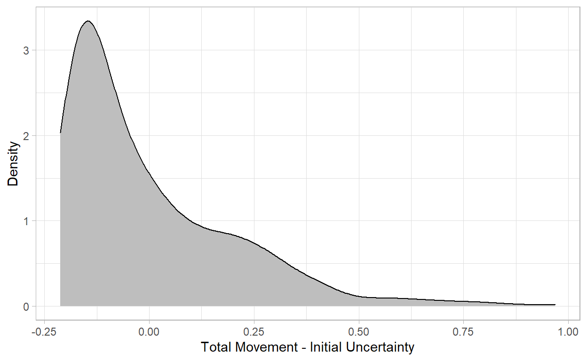

Applying the Augenblick and Rabin (2020) Tests for Rational Bayesian Updating.
I will use the tidyverse, packages from the nflverse, and the baseballR package for this post.
Win probability (WP) models are becoming an increasingly component of sports analysis, including mainstream media and commentary. In the NFL, win probability models are at the heart of the 4th down and 2-point conversion decision analyses that seem to overwhelm discussion of coaching quality and fuel a significant amount of Monday morning quarterbacking.
Like election forecasts, win probabilities are essentially the expected value of a zero(loss)-one(win) process. However, a proper Bayesian updating scheme is a martingale: “knowledge of the past will be of no use in predicting the future” and “the direction of anticipated future swings… should be already baked into the current prediction.”1
The martingale property implies that a stream of forecasted probabilities should not change too much prior to resolution (e.g., end of game, election result decided). When the outcome is highly uncertain, the forecast should be near 50%. Some what counter-intuitively, high uncertainty about the outcome should also imply low volatility in the forecast estimate.2
In 2020, Augenblick and Rabin3 proposed tests that compare the movements in a belief stream (e.g., the squared difference between WP forecasts from play to play within an NFL game) to the change in uncertainty implied by the change in WP forecasts from play to play (e.g., uncertainty = WP * (1 - WP)).
x <- seq(0, 1, by = 0.001)
plot_df <- data.frame(x)
ggplot(plot_df,
aes(x = x)) +
stat_function(fun=function(x) (x * (1-x))) +
labs(x = "Win Probability (WP)",
y = "Uncertainty (= WP * (1 - WP))") +
theme_light()
The Augenblick and Rabin tests are agnostic about what the correct belief about a process should be. Rather, the tests evaluate the information processing implied by movements in the belief stream: on average, the (squared) movement of probability forecasts should be equal in magnitude to the change in uncertainty implied by the probability forecasts.
Using its proposed statistics, the Augenblick and Rabin paper evaluated the “Bayesianess” of (1) estimates from human forecasters, (2) Fangraphs in-game WP estimates, and (3) “market beliefs” implied by market odds from the prediction market Betfair.
To summarize their Table 3 results, all three sources exhibited some amount of excess movement (i.e., statistically significant difference between movement and uncertainty reduction). Whereas the probabilities produced by individual forecasters were somewhat over-reactive (normalized excess movement > 1), the algorithmic Fangraphs WP predictions were somewhat under-reactive (normalized excess movement < 1).
| Statistic | Forecasters | FanGraphs WP | Betfair |
|---|---|---|---|
| Excess Movement Z Score | 4.22 | 9.40 | 19.55 |
| Normalized Excess Movement | 1.20 | 0.931 | 1.046 |
Here, I apply some Augenblick and Rabin’s techniques to the nflfastR’s WP model (specifically, vegas_home_wp). The 2021 season is reviewed, excluding games that went to overtime (i.e., belief streams that are not resolved in regulation). The results do not identify “excess or insufficient movement of beliefs relative to uncertainty reduction”, on average, in the vegas_home_wp streams considered.
# Function that calculates WP movement stats for a data.frame containing a single game
# Function expects data.frame with home WP (home_p) and its complement (home_q) each observation
wp_movement_nfl <- function(df){
for(i in 1:nrow(df)){
# No movement in WP for first row, so stays NA
if(i == 1){
df$unc_reduction[i] = NA_real_
df$movement[i] = NA_real_
}
else {
df$unc_reduction[i] = (df$home_p[i - 1]*df$home_q[i - 1]) - (df$home_p[i]*df$home_q[i])
df$movement[i] = (df$home_p[i] - df$home_p[i-1])^2
}
}
return(df)
}
raw_nfl_df <- load_pbp(2021)
# Find games with plays in OT
ot_games <- raw_nfl_df %>%
group_by(game_id, game_half) %>%
summarize(n = n()) %>%
filter(game_half == "Overtime") %>%
ungroup() %>%
pull(game_id)
nfl_df <- raw_nfl_df %>%
# Remove games that went to OT
filter((game_id %in% ot_games) == F) %>%
# Create p and q variables that are more intuitive to me
rename(home_p = vegas_home_wp) %>%
mutate(home_q = 1 - home_p) %>%
select(game_id, home_p, home_q) %>%
# Add variable to calculate movement and uncertainty reduction
mutate(movement = NA_real_,
unc_reduction = NA_real_)
# Nest season by game
# Apply WP movement function to each game
# Unnest back to long data.frame
nfl_season_df <- nfl_df %>%
group_nest(game_id) %>%
mutate(movement_df = map(data, wp_movement_nfl)) %>%
select(game_id, movement_df) %>%
unnest(cols = movement_df)
# For convenience, remove rows with NA values in movement statistics
nfl_test_df <- nfl_season_df %>%
filter(is.na(movement) == F) %>%
filter(is.na(unc_reduction) == F)First, let’s look at a density plot of the excess movement, which shows the mode near zero.
nfl_test_df %>%
ggplot(aes(x = movement - unc_reduction)) +
geom_density(fill = "gray") +
labs(x = "Excess Movement",
y = "Density") +
theme_light()
Then, we compute summary statistics for average excess movement and normalized excess movement. The normalized excess movement suggests that vegas_home_wp is very slightly under-reactive (i.e., 0.960 slightly less than 1).
# A tibble: 1 x 2
average_excess_movement normalized_excess_movement
<dbl> <dbl>
1 -0.0000463 0.960Next, we test to see if the average excess movement is statistically different from zero. Unlike the streams tested by Auckenblick and Rabin in their paper, the average difference between movement and uncertainty reduction is not statistically different from zero (t = -0.70, p-value = 0.486) for vegas_home_wp.
t.test(nfl_test_df$movement,
nfl_test_df$unc_reduction,
paired = T)
Paired t-test
data: nfl_test_df$movement and nfl_test_df$unc_reduction
t = -0.69684, df = 45779, p-value = 0.4859
alternative hypothesis: true difference in means is not equal to 0
95 percent confidence interval:
-1.763756e-04 8.385582e-05
sample estimates:
mean of the differences
-4.62599e-05 Finally, we consider the relationship between initial uncertainty (in this case, uncertainty determined by vegas line used in the model) and total movement, which in expectation should be equal (Corollary 1 in Augenblick and Rabin). Following the previous pattern for excess movement, we consider a density then perform a t test.
initial_uncertainty <- nfl_season_df %>%
group_by(game_id) %>%
slice_head(n = 1) %>%
mutate(init_uncertainty = home_p * home_q) %>%
select(game_id, init_uncertainty)
game_movement <- nfl_season_df %>%
filter(is.na(movement) == F) %>%
group_by(game_id) %>%
summarize(total_movement = sum(movement))
game_summary <- left_join(initial_uncertainty,
game_movement,
by = "game_id")
game_summary %>%
ggplot(aes(x = total_movement - init_uncertainty)) +
geom_density(fill = "gray") +
labs(x = "Total Movement - Initial Uncertainty",
y = "Density") +
theme_light()
While the difference between total movement and initial uncertainty is right skewed, their mean difference is not significantly different than 0 (t = -0.82, p-value = 0.412).
t.test(game_summary$total_movement,
game_summary$init_uncertainty,
paired = T)
Paired t-test
data: game_summary$total_movement and game_summary$init_uncertainty
t = -0.82257, df = 261, p-value = 0.4115
alternative hypothesis: true difference in means is not equal to 0
95 percent confidence interval:
-0.02743286 0.01126661
sample estimates:
mean of the differences
-0.008083123 For comparison, I perform the same process for the MLB.com WP model via the baseballr package. For time efficiency in a random sample of 500 games in the 2021 MLB season.
# Roberto Clemente: "Any time you have an opportunity to make a difference
# in this world and you don't, then you are wasting your time on Earth."
set.seed(21)
# This is probably not the best workflow to get this data.
# I'm really not well versed with the baseballr package.
mlb_game_pks <- baseballr::mlb_schedule(2021) %>%
filter(game_type == "R") %>%
pull(game_pk) %>%
sample(size = 500)
raw_mlb_df <- map_df(mlb_game_pks, mlb_game_wp)
mlb_df <- raw_mlb_df %>%
rename(home_p = home_team_win_probability,
home_q = away_team_win_probability) %>%
mutate(home_p = home_p / 100,
home_q = home_q / 100) %>%
select(at_bat_index, home_p, home_q) %>%
mutate(movement = NA_real_,
reduction = NA_real_)
wp_movement_mlb <- function(df){
for(i in 1:nrow(df)){
if(df$at_bat_index[i] == 0){
df$reduction[i] = NA_real_
df$movement[i] = NA_real_
}
else {
df$reduction[i] = (df$home_p[i - 1]*df$home_q[i - 1]) - (df$home_p[i]*df$home_q[i])
df$movement[i] = (df$home_p[i] - df$home_p[i-1])^2
}
}
return(df)
}
mlb_excess <- mlb_df %>%
wp_movement_mlb()We look at the density plot for excess movement, which looks similar to the plot for nflfastR’s WP model.
mlb_excess %>%
filter(is.na(movement) == F) %>%
ggplot(aes(x = movement - reduction)) +
geom_density(fill = "gray") +
theme_light() +
labs(x = "Excess Movement",
y = "Density")# A tibble: 1 x 2
average_excess_movement normalized_excess_movement
<dbl> <dbl>
1 -0.0000213 0.994The normalized excess movement for the MLB.com WP model is even closer to 1. Similar to nflfastR’s WP model, the average excess movement is not significantly different from 0 (t = -0.164, p-value = 0.87).
Paired t-test
data: mlb_test_df$movement and mlb_test_df$reduction
t = -0.16401, df = 36915, p-value = 0.8697
alternative hypothesis: true difference in means is not equal to 0
95 percent confidence interval:
-0.0002761741 0.0002335249
sample estimates:
mean of the differences
-2.132457e-05 Finally, we consider the relationship between initial uncertainty and total movement for the MLB.com WP model, which in expectation should be equal.
game_index = 0
mlb_excess <- mlb_excess %>%
mutate(game_index = NA_integer_)
for(i in 1:nrow(mlb_excess)){
if(mlb_excess$at_bat_index[i] == 0){
game_index = game_index + 1
}
mlb_excess$game_index[i] = game_index
}
mlb_init_uncertainty <- mlb_excess %>%
group_by(game_index) %>%
slice_head(n = 1) %>%
mutate(init_uncertainty = home_p * home_q) %>%
select(game_index, init_uncertainty)
mlb_total_movement <- mlb_excess %>%
group_by(game_index) %>%
summarize(total_movement = sum(movement, na.rm = T))
mlb_total_compare <- left_join(
mlb_init_uncertainty,
mlb_total_movement,
by = "game_index"
)
mlb_total_compare %>%
ggplot(aes(x = total_movement - init_uncertainty)) +
geom_density(fill = "gray") +
theme_light() +
labs(x = "Total Movement - Initial Uncertainty",
y = "Density")
As with the nflfastR model, the difference between total movement and initial uncertainty is right skewed, but the mean difference is not significantly different than 0 (t = -0.174, p-value = 0.862).
t.test(mlb_total_compare$total_movement,
mlb_total_compare$init_uncertainty,
paired = T)
Paired t-test
data: mlb_total_compare$total_movement and mlb_total_compare$init_uncertainty
t = -0.17433, df = 499, p-value = 0.8617
alternative hypothesis: true difference in means is not equal to 0
95 percent confidence interval:
-0.01931849 0.01616961
sample estimates:
mean of the differences
-0.001574436 The papers in the footnotes are really interesting to me because they illustrate that a WP conveys more than the expected relative frequency of winning given the current game state. The point estimate also conveys the uncertainty of the outcome of the process.
This blog post applied some of Augenblick and Rabin’s information processing diagnostics for popular WP models. According to these diagnostics, both nflfastR’s vegas_home_wp model and MLB.com’s WP model demonstrate coherent Bayesian updating, on average. Additionally, both models appear to outperform the model’s evaluated by Augenblick and Rabin in this respect.
Gelman, Hullman, Wlezien, and Morris; 2020. Information, incentives, and goals in election forecasts.↩︎
Taleb; 2017. Election predictions as martingales: An arbitrage approach.↩︎
Augenblick and Rabin; 2020. Belief Movement, Uncertainty Reduction, & Rational Updating.↩︎